This week I opted to learn how to do sheet metal drawing and forming and made my own punch and die.
Background Information and Design
Alignment of the two different stress situations, such as those within the corner and straight side of a part, can be solved by the alteration of the part’s geometry and by a partial decrease of the drawing space between the punch and die in straight areas
For drawing of rectangular or square shells in one operation, the clearance between the punch and die should be equal to the thickness of the drawn material.
Gauge
Based on a measurement using a vernier caliper of the sheet metal the gauge of the metal is 26 gauge.
| Gauge No | Inch | Metric |
|---|---|---|
| 20 | 0.036" | 0.9mm |
| 21 | 0.032" | 0.8mm |
| 22 | 0.028" | 0.7mm |
| 23 | 0.024" | 0.6mm |
| 25 | 0.020" | 0.5mm |
| 26 | 0.018" | 0.45mm |
| 27 | 0.0164" | 0.42mm |
| 28 | 0.0148" | 0.37mm |
| — | — | — |
Piece to be formed
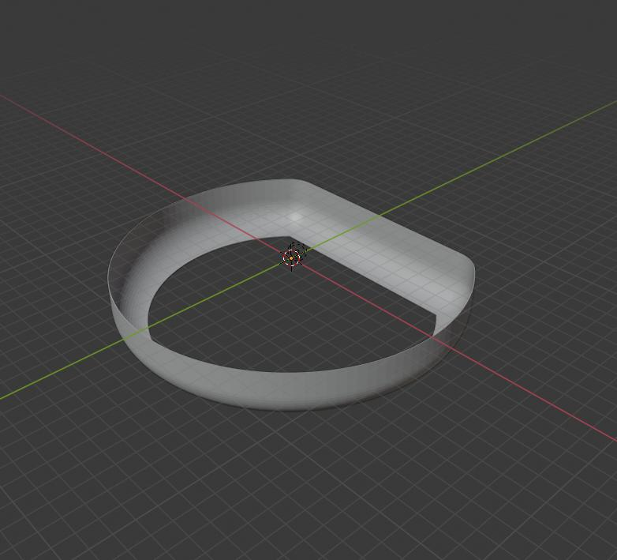For cylindrical shell
Number of Drawing passes
The severity of the drawing operation may be expressed by the relationship of the blank diameter to the cup diameter. This ratio, often called a cupping ratio, allows for an assessment of the amount of drawing passes needed to produce a particular shell. Where this ratio is exceeded, a fracture of the shell results, attributable to the exhaustion of drawing properties of the particular material. This means that from a blank of a certain size, only a certain cup diameter and its depth may be produced during a single drawing pass. The severity of draw is calculated using Eq. (9-4): (9-4)
K = Do/d or M = d/Do
where K is the severity of draw factor and M is the reverse value of severity of draw factor. Recommended values of M to be used for the first drawing pass are M = 0.48 to 0.60, with dependence on the drawn material properties.
Need to check that the blank Diameter Do is no more than 2x the diameter of the final drawn Diameter to ensure that only one pass is needed.
Drawing radius of the die and punch
The Drawing radius design is a function of the type of blank holding you will be using. In our case we will be using a blank holder as per the middle photo below therefore we will have a simple radius design
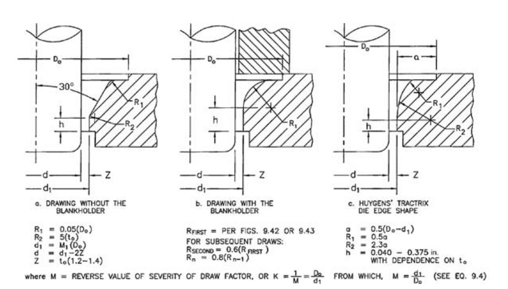Drawing Radius of punches and dies as function of stock thickness
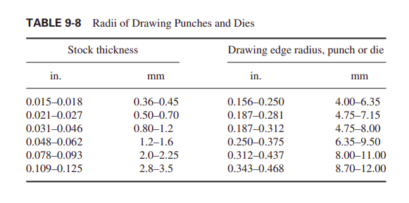From the table we want a radius of between 4 and 6.35 mm. I will take 4.5 mm as the radius of the die. This respects the rule of 6 to 10 times the thickness.
The clearance that will be selected for the round portion will be 1.4 times the thickness.
Calculating blank size for round portion
For the round portion of the blank the equation to determine the diameter of the blank (D) is
D = (d1^2+6.28Rd1+8R^2+4d2h)^0.5
as per the case of the top right corner in the figure below.

In my case d1 is equal to d2-2R. Therefore the equation becomes:
D = ((d2-2R)^2+6.28R(d2-2R)+8R^2+4d2h)^0.5
which simplifies to:
D = (d2^2+2.28Rd2-0.56R^2+4d2*h)^0.5
For my Project D = 258.47 and d2 = 204 therefore M = 0.79 which is greater than the 0.48 recommended, therefore we can draw this cyclinder in one single pass and multiple passes will not be necessary.
This also corresponds with not exceeding the maximum reductions in diameters as outlined in Table 9-1 of the book below
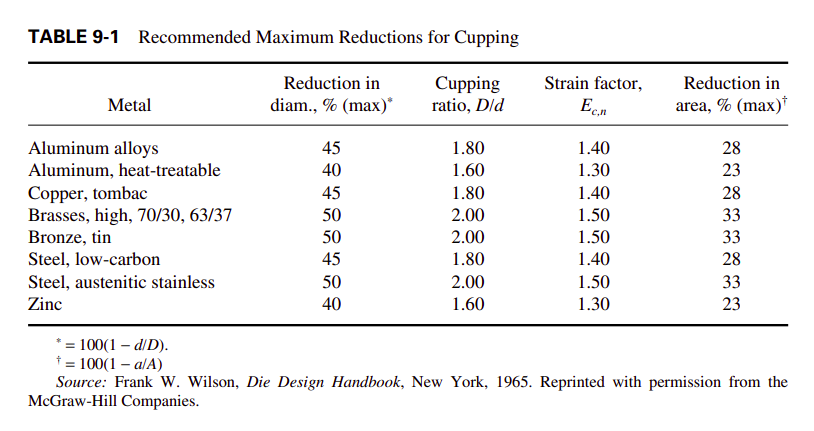For square part
Alignment of the two different stress situations, such as those within the corner and straight side of a part, can be solved by the alteration of the part’s geometry and by a partial decrease of the drawing space between the punch and die in straight areas
For drawing of rectangular or square shells in one operation, the clearance between the punch and die should be equal to the thickness of the drawn material.
The method of obtaining an approximate shape of the corners of blank for square or rectangular shells is shown in Fig. 9-58. It may be used only for such drawn products whose width exceeds the depth and whose corner radius is equal to the bottom radius.
The distance between the corner radii centers should be at least six times the value of a corner radius (see Fig. 9-57). If such a distance should be smaller than 6R,
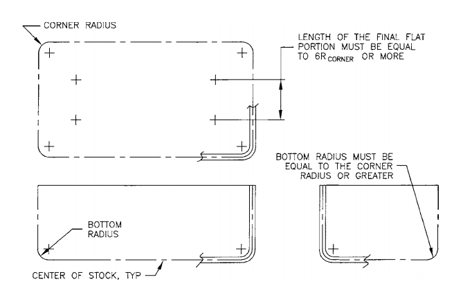 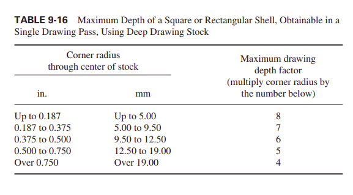Draw beads
For a length that is being drawn it is important to slow down the speed at which it is drawn using drawing beads at a distance of approximately 30.2 mm from the die edge as shown in the figure below
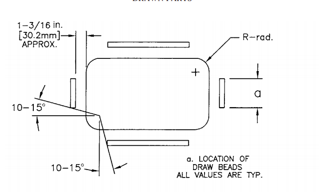Calculating blank size for square portion
To calculate the blank size for the square portion of the part, I used the formulas shown in the figure below to calculate the size.
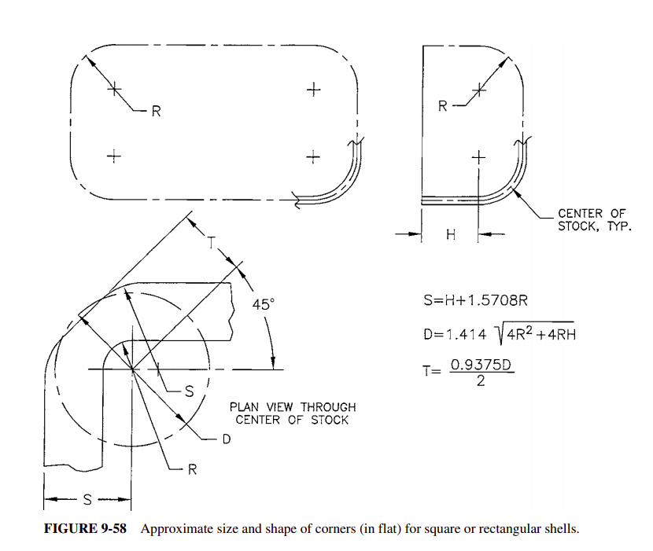Calculating S:
S = H+1.5708R
where H is the height of the side (15 mm) and R is the corner radius.
D = 1.414(4R^2+4R*H)^0.5
Where D in this case is the diamater of the circle the describes the curves that transition from the flat side to the corner
T = (0.9375*D)/2
Where T is the distance between the center of the radius and the flat portion that cuts off the excess material in the corner
Drawing speed
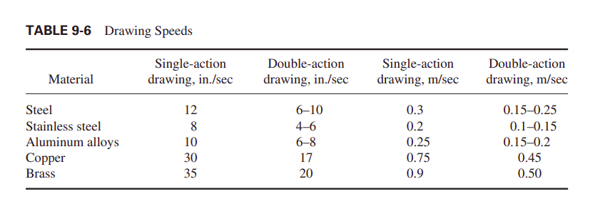Die Design
For this project I am going to use a push through die with a blank holder and therefore a radiused die inlet as per image be in the figure below
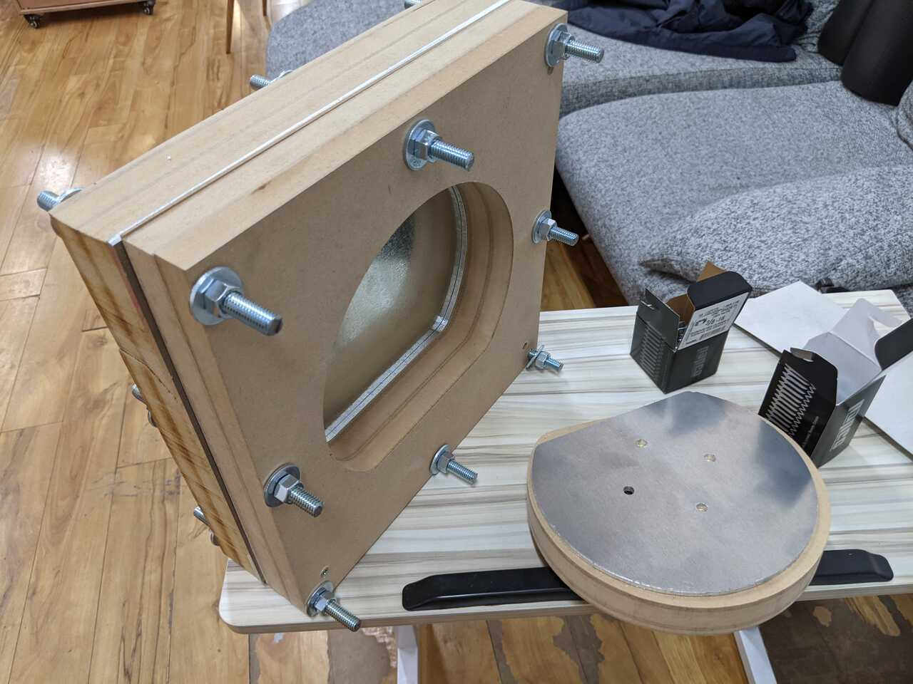Ventholes
For ease of removing the formed piece from the punch after drawing/forming it helps to put vent holes so that the air can escape as per the image below.
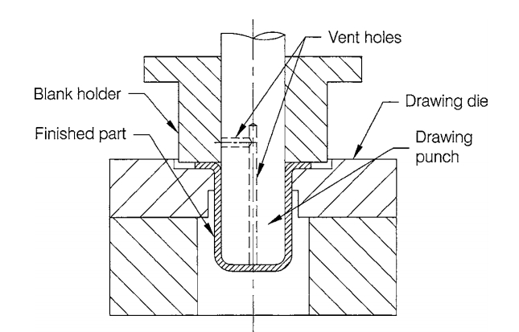CNC Milling
According to the image below, different types of bits should be used for difference circumstances.
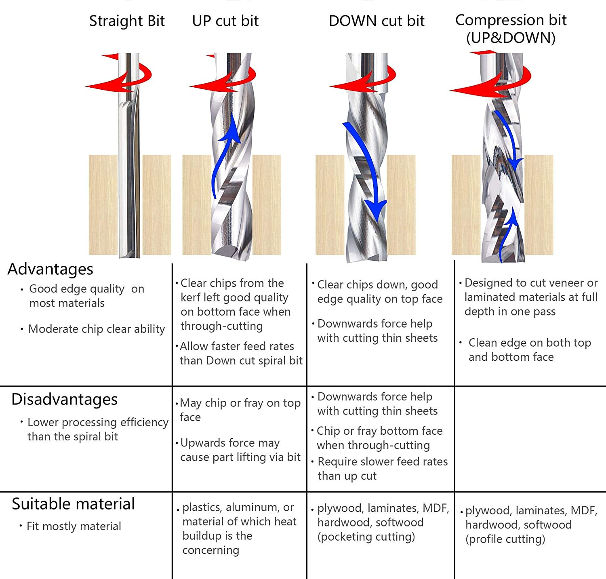For this project we will be cutting aluminum and using an upcut for that.
For MDF we can use any, we will use a straight cut bit
For the thin sheet metal we will use downcut so that the bit pushes down on the sheet.
In the following section we will discuss the workflow
Workflow
- Design the die
- Design the blank
- Make the die
- Cut the blank
- Insert the blank and assemble the die
- Form the piece
1. Design the die
2. Design the blank
3. Make the die
Cutting punch and die
Cutting Blank holders
4. Cut the blank
Fixturing
Cutting
Once fixture spray water onto the workpiece to keep things cool
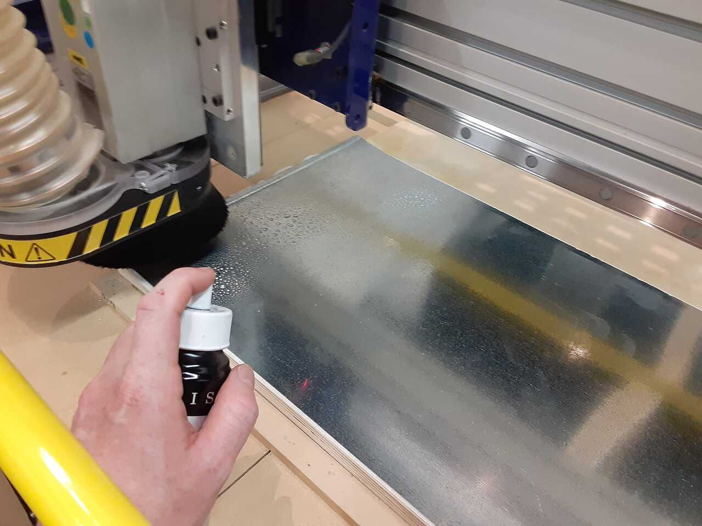It is important that when you cut sheet metal you use a DOWNCUT bit. This will ensure that the sheet metal is pushed downward and does not spiral up the bit as it punctures through.
5. Insert the blank and assemble the die
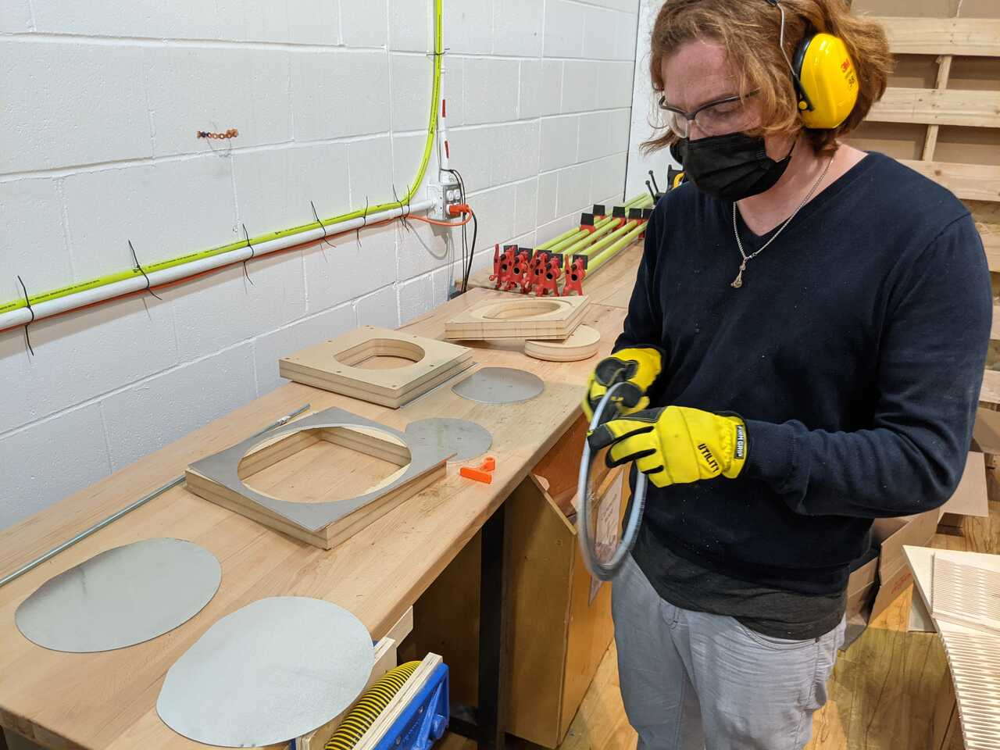 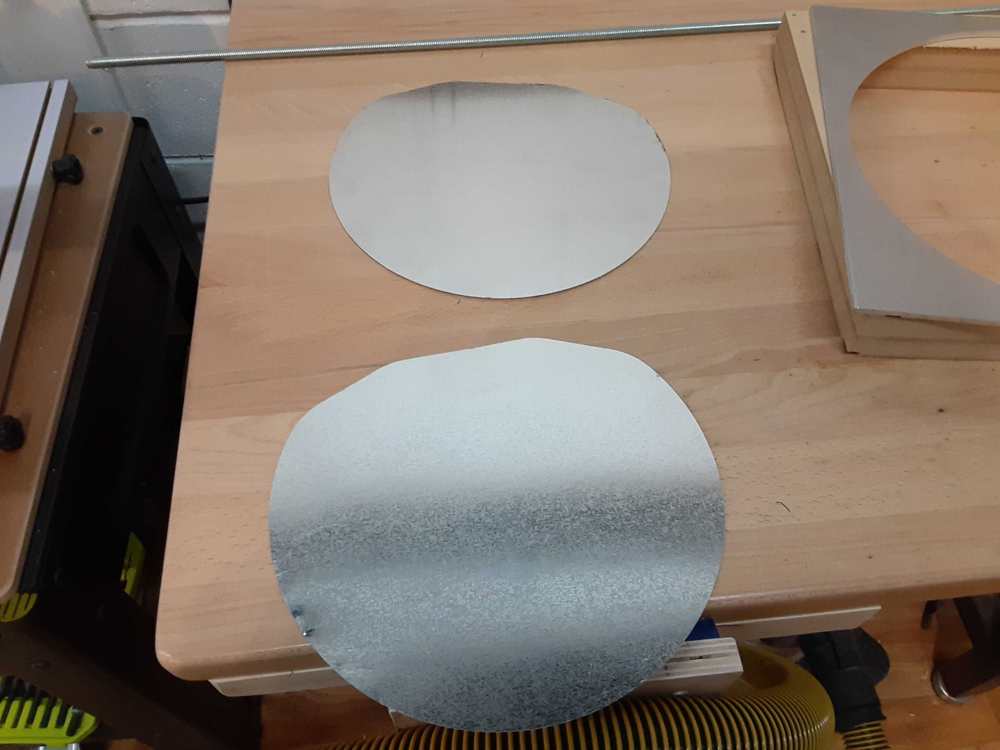 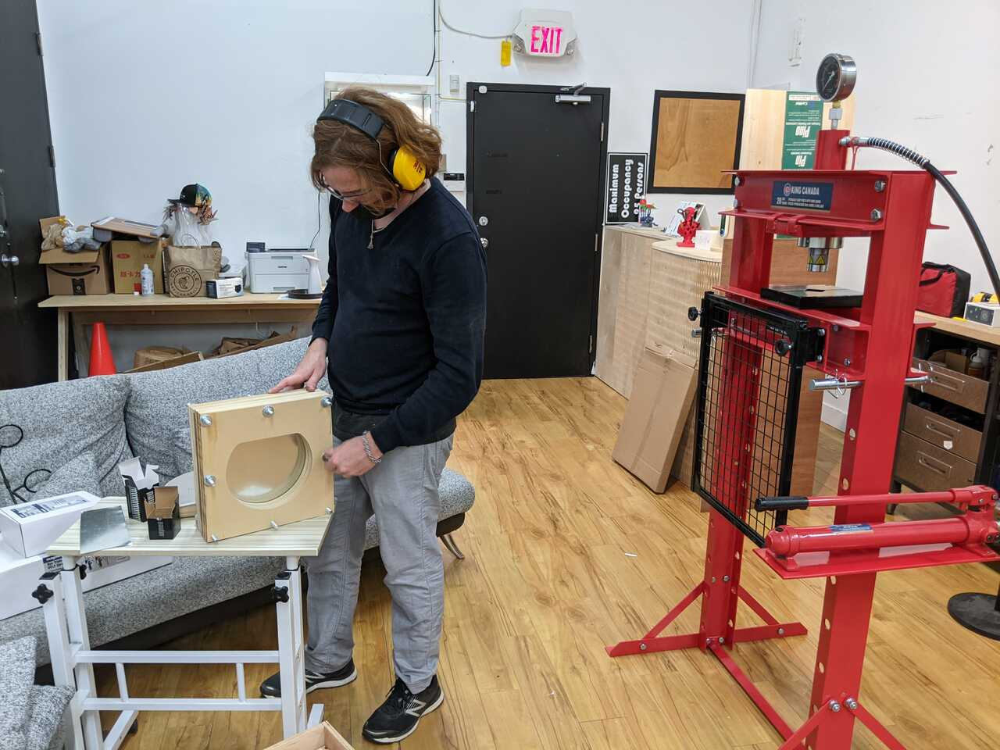6. Form the piece
We started by testing.
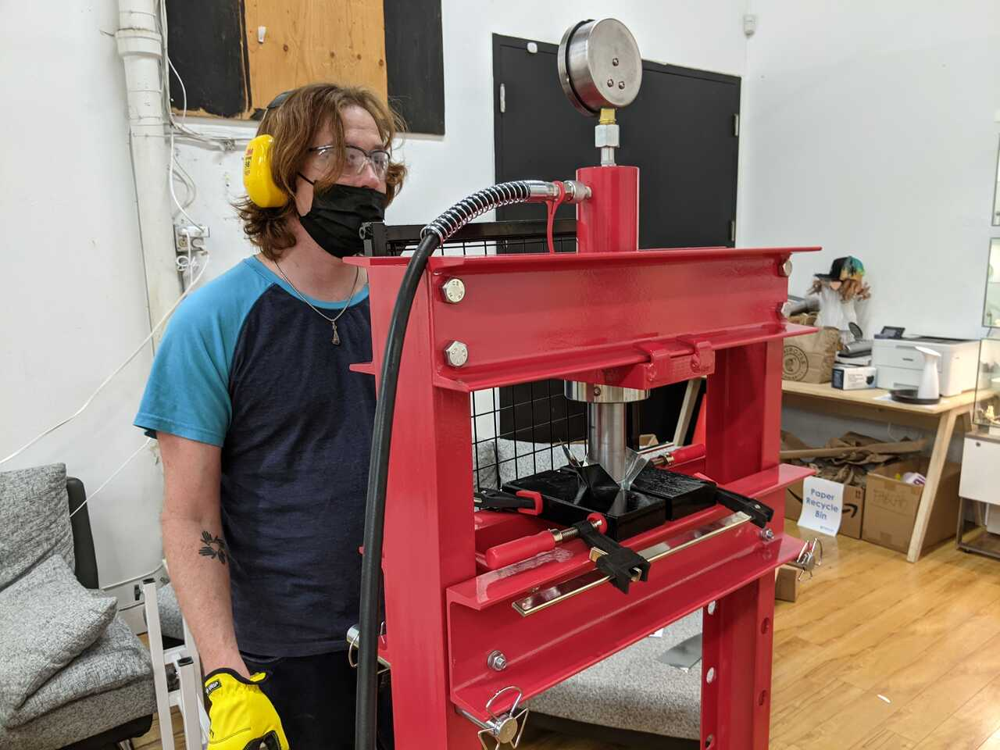 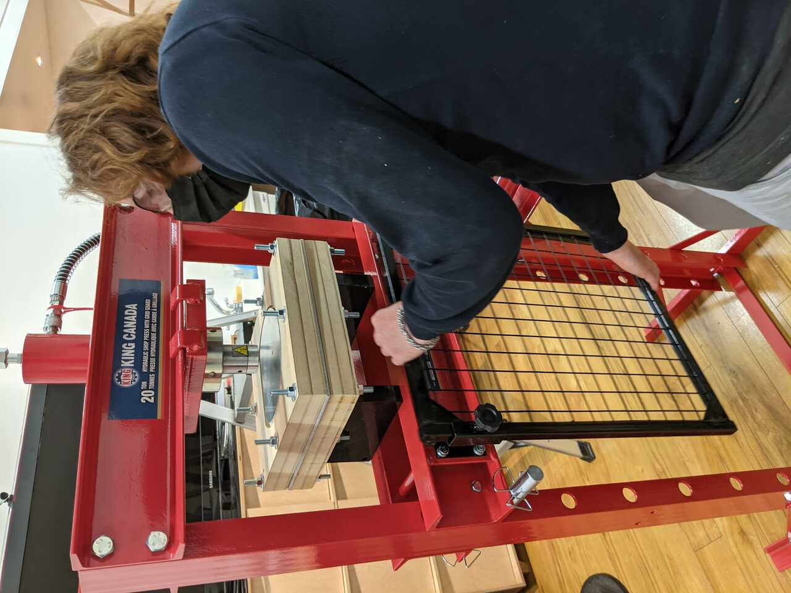7. Assemble
Files
- blank.dxf
- bottom.stl
- die.stl
- guide.dxf
- punch.stl
- plate.stl
- plate.dxf
- platepocket.dxf
- outsidesheet.dxf